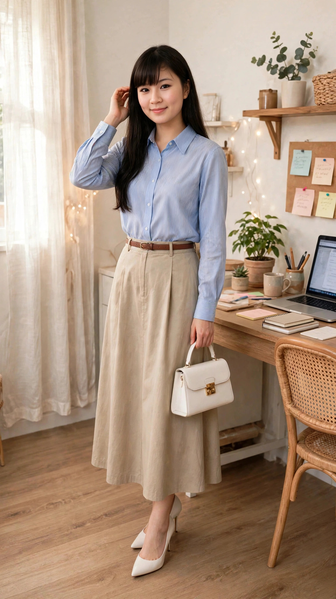
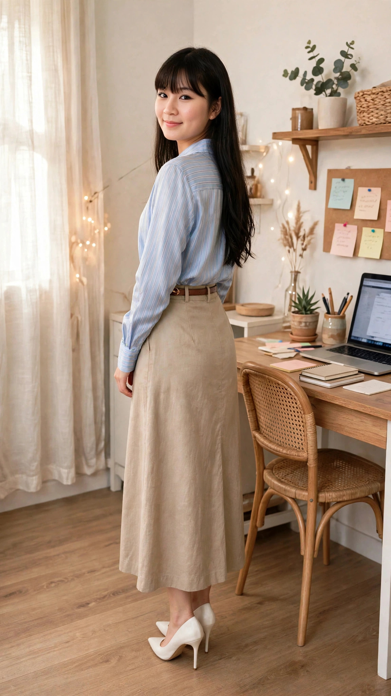

Set sơ mi lụa sọc xanh đi làm: nhẹ, mát, mặc như đi chơi
Sáng thứ Ba, Lisa chọn một set đi làm vừa thanh lịch vừa thoải mái: áo sơ mi lụa sọc xanh dương nhạt dài tay, phối cùng chân váy kaki dáng dài màu be kèm đai nâu, đi giày cao gót trắng mũi nhọn và xách túi nhỏ trắng. Đi làm mà mặc như đi chơi thì sao? Lisa cứ mặc đẹp đã — một màu pastel là đủ xinh, không cần phối nhiều màu.
Đọc trước khi mua: bài viết này là gợi ý phối đồ lấy cảm hứng từ mẫu set sơ mi lụa đang bán chạy trên TikTok Shop. Lisa là nhân vật AI, nên bài viết không phải bài đánh giá sản phẩm Lisa đã mặc thật hay đã dùng thử. Giá, chất liệu và size cần kiểm tra lại trên trang bán trước khi mua. Link mua hàng: [CHƯA GẮN LINK] — sẽ cập nhật khi Lisa Style đủ điều kiện gắn link affiliate.
Nhìn bộ đồ từ nhiều góc
Cùng một set sơ mi lụa, nhìn từ trước, lúc xoay lưng và lúc ngồi làm việc sẽ khác nhau — xem đủ 3 góc rồi hãy quyết có hợp với bạn không:

Nhìn từ trước — sơ mi sọc xanh, chân váy be

Xoay lưng — chân váy dài, đai nâuLúc ngồi làm việc — vải lụa vẫn rủ gọn
Vì sao set sơ mi lụa hợp đi làm mùa nóng?
Vải lụa mát và nhẹ: áo sơ mi lụa chạm vào da thấy mát ngay, vải rủ nhẹ, không bí dù mặc cả ngày trong văn phòng.
Sọc xanh dương nhạt dịu mắt: một màu pastel là đủ xinh — sọc xanh nhạt vừa trẻ trung vừa không quá nổi, hợp môi trường công sở.
Chân váy kaki dáng dài: chân váy dài màu be che nắng, che khuyết điểm chân, lại lịch sự hơn váy ngắn khi đi làm; đai nâu nhấn eo, tạo dáng gọn gàng.
Tông be — trắng — xanh nhạt: ba màu sáng phối cùng nhau tạo cảm giác nhẹ nhàng, mát mẻ, hợp thời tiết TP.HCM khoảng 30–33°C.
Cách phối set sơ mi lụa này
Giày cao gót trắng mũi nhọn: giày trắng cùng tông với túi, kéo dài chân khi đi cùng chân váy dài. Nếu phải đi lại nhiều, có thể đổi sang giày cao gót đế vuông thấp hoặc giày búp bê trắng — vẫn giữ được tông màu.
Túi nhỏ trắng: chọn túi nhỏ gọn, màu trắng hoặc kem, đủ đựng điện thoại, ví và son. Tránh túi to, nặng — set này đẹp nhất khi tổng thể gọn nhẹ.
Đai nâu: đai nâu kèm theo chân váy là điểm nhấn — thắt vừa eo, không siết chặt. Nếu chân váy của bạn không kèm đai, có thể dùng thắt lưng da nâu mảnh thay thế.
Phụ kiện: giữ tối giản — khuyên tai nhỏ màu bạc hoặc vàng nhạt, đồng hồ dây da nâu. Tóc dài xõa nhẹ hoặc buộc thấp gọn gàng đều hợp.
Outfit này hợp với ai?
Người làm văn phòng, thích mặc đẹp đi làm mà vẫn thoải mái cả ngày.
Người dáng nhỏ: chân váy dáng dài + giày cao gót giúp dáng trông cao và gọn hơn, nhất là khi áo sơ mi được sơ vin gọn vào váy.
Người thích tông màu sáng, pastel: xanh dương nhạt và be hợp với da sáng và da trung bình, tạo cảm giác tươi tắn buổi sáng.
Ai nên cân nhắc trước khi chọn?
Người hay đổ mồ hôi nhiều: lụa mát nhưng thấm mồ hôi kém hơn cotton; nếu bạn hay đổ mồ hôi, nên chọn lụa pha cotton hoặc mang theo áo khoác mỏng dự phòng.
Người sợ vải lụa nhăn: lụa dễ nhăn khi ngồi lâu; nên chọn lụa có pha sợi khác để ít nhăn hơn, hoặc ủi nhẹ trước khi mặc.
Người cao và chân dài: chân váy dáng dài có thể làm dáng trông nặng nề hơn nếu chọn sai độ dài; nên chọn váy dài tới mắt cá chân, không quét đất.
Người không thích giặt tay: áo lụa cần giặt nhẹ; nếu giặt máy mạnh tay, vải dễ xù và mất độ bóng.
Mẹo nhỏ để mặc set lụa đi làm cả ngày vẫn xinh
Sơ vin gọn áo vào váy: sơ vin giúp eo gọn, chân trông dài hơn — mẹo quan trọng nhất với người dáng nhỏ.
Chọn một màu pastel làm chủ đạo: xanh nhạt đã đủ điểm nhấn, phần còn lại giữ tông trung tính be — trắng để tổng thể không rối mắt.
Mang theo áo khoác mỏng: văn phòng bật điều hòa lạnh thì khoác thêm blazer trắng hoặc cardigan mỏng cùng tông.
Ủi nhẹ áo trước khi mặc: lụa nhăn nhẹ là bình thường, nhưng ủi qua ở nhiệt độ thấp giúp áo lên dáng đẹp hơn hẳn.
Lưu lại công thức này: sơ mi lụa pastel + chân váy dài màu be + giày trắng — đổi sọc xanh thành sọc hồng hay trắng trơn là có ngay set mới cho hôm sau.
Xem video này
Lisa đã lên đồ set sơ mi lụa này trong video sáng thứ Ba 10/11 — xem Lisa đứng, xoay và ngồi làm việc với set lụa xanh:
Video sáng 10/11 lên sóng lúc 08:00. Các link TikTok và Facebook trên là link kênh/trang — mở kênh là thấy video khi lên sóng.
Câu hỏi thường gặp
Set sơ mi lụa này mặc đi chơi được không?
Được — chỉ cần đổi giày cao gót thành sandal quai mảnh và bỏ túi công sở, set này đi cà phê cuối tuần vẫn rất hợp. Đó cũng là điểm hay của set: một bộ, mặc được cả đi làm lẫn đi chơi.
Chân váy kaki dáng dài có nóng không?
Kaki mỏng, thoáng thì không nóng lắm, nhất là màu be nhạt ít hấp thụ nhiệt. Nên chọn kaki mềm, có lót mỏng bên trong để không bí khi ngồi lâu.
Dáng nhỏ mặc chân váy dài có bị lùn không?
Không, nếu sơ vin gọn áo và đi giày cao gót. Mẹo là chọn váy dài tới mắt cá chân, không dài quét đất, và thắt đai đúng eo để tạo tỉ lệ chân dài hơn.
Lisa đã mặc thật bộ này chưa?
Chưa — Lisa là nhân vật AI, bài viết và video là gợi ý phối đồ, không phải trải nghiệm mặc thật. Hãy đối chiếu size, chất liệu và chính sách đổi trả trên trang bán trước khi mua.
Link affiliate: bài viết này hiện chưa gắn link mua hàng. Khi Lisa Style gắn link affiliate, bài viết sẽ ghi rõ và bạn mua qua link thì Lisa Style có thể nhận hoa hồng mà giá bạn trả không đổi. [CHƯA GẮN LINK]